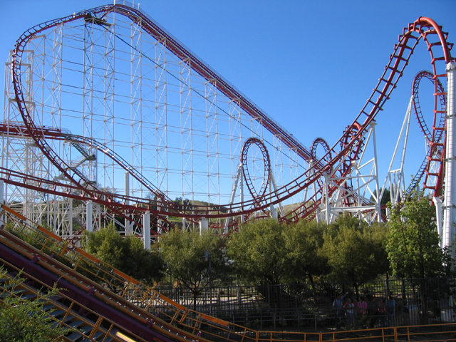
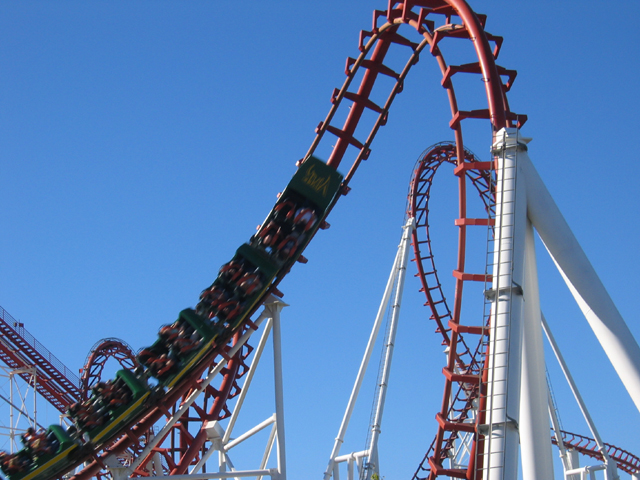
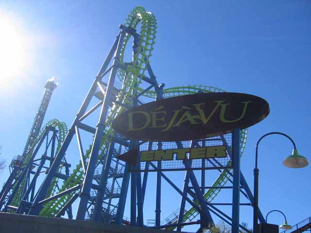
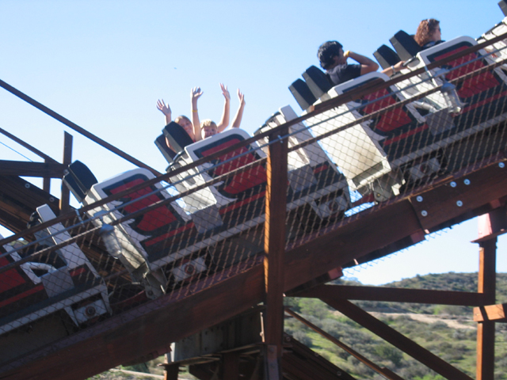
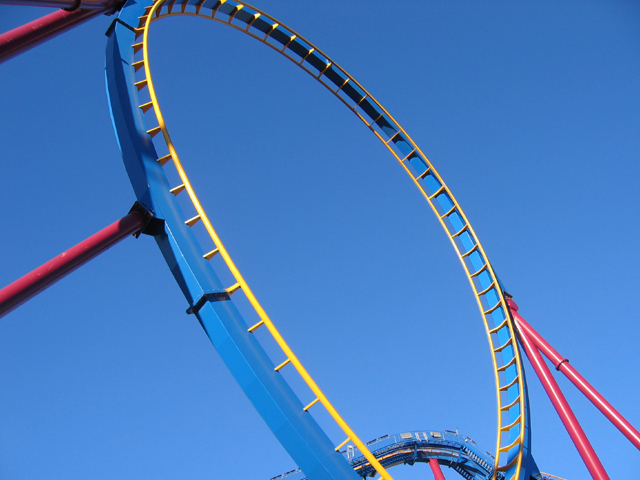
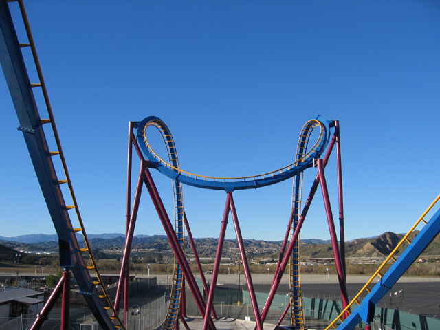
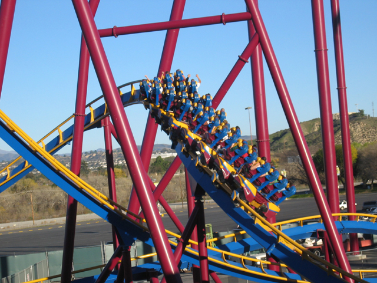
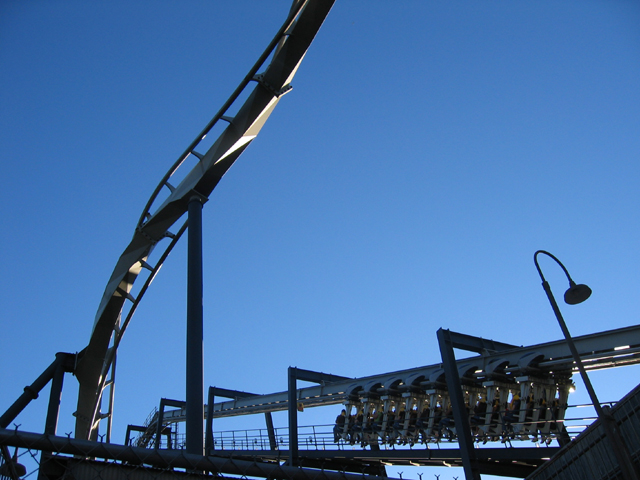
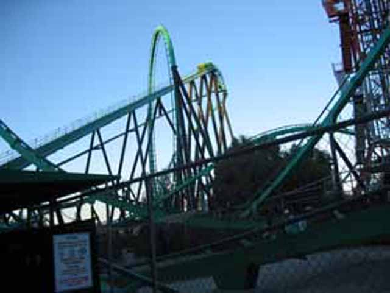

Six Flags Magic Mountain
 The worlds first coaster with a vertical loop has aged quite badly!
The worlds first coaster with a vertical loop has aged quite badly!
This will be Alisas first time on X! The #1 coaster I've been on so far!
Don't worry Alisa, all you do is drop 200 ft face first and tumble and
flip out of control for 60 seconds!
Almost there. Almost There! ALMOST THERE!!!!!
 Alisa loved X. We had so much fun that we forgot it was an Arrow ride!
Alisa loved X. We had so much fun that we forgot it was an Arrow ride!

Viper is an Arrow ride that was remembered was an Arrow ride.

Despite the roughness, its a pretty good ride.

Oh My God! Its that Vekoma ride thats on my Top 10 steel coaster list at the
moment!
Did you drink 20 gallons of Turbo this morning Kevin because you want to
HUG DejaVu!!!!
Kevin, somethings wrong with your brain to think Psyclone is SMOOTH!!!!!!
We have no idea what we're in for.

Enjoy the comfort while it lasts.
 OH MY GOD! JESUS CHRIST!!! OH MY GOD!!! OWWWWW!!!!!
OH MY GOD! JESUS CHRIST!!! OH MY GOD!!! OWWWWW!!!!!
OH MY GOD! WE JUST WENT THROUGH HELL!!!!!!
Mooseburger Lodge provides the best food at Six Flags Magic Mountain.
\
Hey Andrew, its a Pirate Ship!
We're pumped up and ready to ride Goliath!

This is Scream.

Here are 2 of Screams 7 Inversions!

Heres the airtime hill on Scream purchased over the Parking Lot.

Batman the Ride is a great ride on my Top 10 coaster list at the moment.
Alisa supports Batman the Ride!
 Riddlers Revenge is currently one of my favorite coasters!
Riddlers Revenge is currently one of my favorite coasters!

Riddlers Revenge is currently the tallest, fastest, loopiest, longest and best stand up coaster in the world!
Freefall is fun, but I'd much rather be on Supreme Scream or Tower of Terror.
 Oh boy! Another Arrow ride!
Oh boy! Another Arrow ride!
We'll end the update by going on Jet Stream!
Home